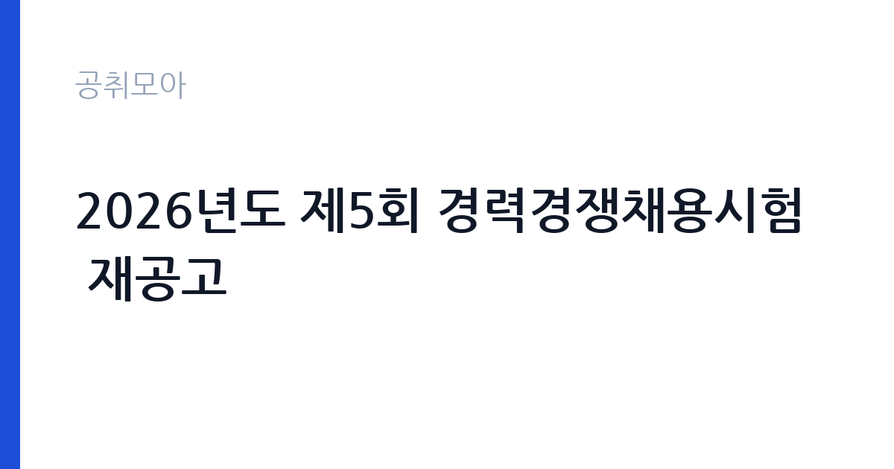

[국가기관] 2026년도 제5회 경력경쟁채용시험 재공고
중앙선거관리위원회 · 부산 · 마감 2026-11-09 (D-10) · 출처 나라일터

한눈에 보는 모집 조건
| 기관 | 중앙선거관리위원회 |
|---|---|
| 공고명 | 2026년도 제5회 경력경쟁채용시험 재공고 |
| 고용형태 | 정규직 |
| 근무지 | 부산 |
| 게시일 | 2026-10-30 |
| 마감일 | 2026-11-09 (D-10) |
지원자격, 이렇게 읽으세요
- 한시임기제 8호 1명
- 접수 ~2026-11-09 마감
- 세부 조건은 원문 공고문 확인
정규직 채용은 기간의 정함이 없는 근로계약을 전제로 합니다. 수습 기간을 두고 평가한 뒤 정규직으로 확정하는 절차가 일반적이며 기관의 인사 규정과 임금 체계를 적용받습니다. 이번 공고는 중앙선거관리위원회에서 직접 진행하는 자체 전형으로, 응시자격과 제출서류는 공고문에 항목별로 제시됩니다. 한시임기제공무원은 임용 기간이 정해진 신분으로, 응시자격은 직위별로 다릅니다. 이 공고는 재공고이므로 앞선 공고에서 요건이 충족되지 않았거나 지원자가 없었을 가능성이 있습니다. 직급 대비 경력 요건과 우대 사항, 제출서류는 붙임 공고문을 기준으로 확인해야 하며, 제목에 직무가 표시되지 않아 원문의 모집분야 항목을 반드시 읽어야 합니다. 임용일부터 근무 가능한지도 요건에 포함되는 경우가 많습니다. 서류는 접수 마감 이후 보완이 되지 않으므로 자격 요건과 증빙 서류를 마감 전에 모두 갖춰야 합니다. 공고문에 명시된 우대 사항은 해당 여부를 확인해 증빙을 첨부해야 가점이 반영됩니다. 동일 직무 경력자와 경쟁하게 되므로, 관련 경험이 있다면 증명서에 업무 내용이 구체적으로 적히도록 요청하십시오.
이 공고의 포인트
이 공고의 첫 번째 포인트는 고용 형태입니다. 수습 기간 평가를 통과하면 기간의 정함이 없는 신분이 되어 고용이 안정됩니다. 두 번째는 업무 범위가 명확하다는 점입니다. 선거·정당 실무(임기제) 직무로 채용되므로 배치 이후 담당 업무가 크게 흔들리지 않습니다. 세 번째는 근무지입니다. 부산 지역 근무로 수도권 공고에 비해 지원자 분포가 넓지 않아 상대적으로 경쟁이 분산되는 경우가 있습니다. 접수 기간이 길지 않아 서류 준비와 자격 확인을 동시에 진행해야 합니다. 같은 직무 공고 중에서는 접수 마감이 가장 빨라 일정을 앞당겨 잡아야 합니다. 다만 선발 인원이 1명으로 많지 않아 자격을 갖춘 지원자가 몰리면 경쟁률이 높아질 수 있습니다.
전형은 어떻게 진행되나
1차 서류, 2차 면접의 2단계로 진행되는 구성이 일반적입니다. 서류에서는 자격 요건과 경력 증빙을 확인하고, 면접에서는 실제 업무 수행 능력과 조직 적응을 봅니다. 직무에 따라 필기시험이나 실기, 컴퓨터 활용 시험이 추가되기도 하므로 공고문의 전형표를 먼저 확인하십시오. 단계별로 합격자만 다음 전형에 응시할 수 있고, 단계마다 응시 자격 확인 서류를 다시 제출해야 하는 경우가 있습니다. 최종합격자 발표 후에는 신원조회와 채용 신체검사가 남아 있습니다. 제출서류 원본은 최종 단계에서 다시 요구되는 경우가 있어 사본과 함께 보관하십시오.
이런 분께 추천해요
- 공고문의 직위별 응시자격을 충족하는 분
- 선거·행정 실무 경험이 있는 분
- 휴일·야간 근무가 몰리는 시기를 감당할 수 있는 분
지원 전 체크리스트
- 응시자격 요건과 경력 기준을 충족하는가 — 경력은 증명서로 입증해야 합니다
- 수습 기간과 정규직 전환 조건을 확인했는가
- 제출서류 목록을 모두 준비했는가 — 누락 시 서류 단계에서 탈락합니다
- 접수 마감 2026-11-09 이전에 접수 방식을 확인해 제출했는가
모집 일정과 제출 타이밍
2026-10-30에 공고가 올라왔고 접수는 2026-11-09까지입니다. 남은 기간은 10일이며, 이 기간에 자격증 사본과 경력증명서, 주민등록등본 같은 기본 서류를 모두 준비해야 합니다. 경력증명서는 발급에 며칠이 걸리는 경우가 있으니 가장 먼저 신청하십시오. 접수는 온라인과 우편·방문으로 나뉘는 경우가 많고, 우편 접수는 도착 기준으로 판정되므로 마감일 소인만 믿으면 안 됩니다. 면접 일정은 서류 발표 후 개별 통보되므로 제출 후에도 연락을 받을 수 있도록 유지해야 합니다. 접수 첫날에 몰리면 시스템 접속이 지연될 수 있으므로 오전 시간대 제출이 안전합니다. 부산 근무지는 지역 안에서도 이동 시간이 길어 근무지 위치를 구체적으로 확인하는 것이 좋습니다. 마감까지 2주 안팎이 있어 준비할 시간은 있지만 미루면 촉박해집니다. 선발 인원이 한두 명 수준이라 지원자 개개인의 서류 완성도가 그대로 평가에 반영됩니다.
직무 이해하기: 국가기관
중앙선거관리위원회는 선거와 국민투표의 관리, 정당 및 정치자금 사무를 담당하는 헌법기관입니다. 중앙위와 시·도선거관리위원회, 구·시·군위원회로 조직이 나뉘고, 선거 사무와 정당·정치자금 심사, 전산·통계 지원 업무를 수행합니다. 임기제 인력은 정해진 기간 동안 특정 직위의 실무를 맡으며, 선거가 있는 시기에는 일정이 집중되고 휴일 근무가 발생합니다. 정치적 중립과 비밀 유지가 다른 기관보다 엄격하게 요구됩니다. 중앙선거관리위원회는 선거와 국민투표 관리, 정당·정치자금 사무를 담당하는 헌법기관입니다. 한시임기제 8호는 정해진 기간 동안 특정 업무를 맡는 임기제공무원으로, 선거 사무나 정당·정치자금 관련 실무, 전산·통계 지원 가운데 해당 직위의 업무를 수행합니다. 선거가 있는 시기에는 일정이 집중되고 휴일 근무가 발생합니다. 담당 업무는 직위 기술서에 구체적으로 정해져 있으며, 위원회는 이 공고를 재공고로 다시 낸 상태입니다. 업무는 혼자 처리하기보다 부서 단위로 나눠 진행되므로 담당 구역과 협업 범위를 입사 초에 확인하는 것이 중요합니다. 업무 강도와 근무 시간대는 부서 배치에 따라 달라지므로 면접에서 확인하는 것이 가장 정확합니다.
자기소개서 작성 팁
지원서는 지원 직위를 첫 문단에서 분명히 밝히는 것이 중요합니다. 직위명이 제목에 드러나지 않는 공고이므로 어떤 업무에 지원했는지가 보이지 않으면 준비도가 낮게 평가됩니다. 관련 실무 경력과 사용 가능한 시스템, 문서 작성 능력을 구체적으로 쓰십시오. 정치적 중립과 보안 유지에 대한 태도를 한 문단 넣으면 신뢰를 얻습니다. 직무 경험이 많지 않다면 경험의 양보다 과정을 구체적으로 쓰는 편이 낫습니다. 어떤 상황에서 무엇을 판단했고 어떤 결과가 나왔는지 순서대로 서술하면 신뢰가 생깁니다. 지원 동기와 기여 방안은 한 문단씩 짧게 유지하고, 가장 자신 있는 경험에 분량을 몰아주십시오. 마지막 문장은 포부보다 구체적인 실행 계획으로 끝내는 것이 좋습니다.
면접 준비 포인트
면접에서는 지원 직위의 실무 이해와 공직 적합성을 확인합니다. 선거·정당 사무의 중립성과 비밀 유지가 특히 강조되므로 정치적 중립을 지킨 경험을 준비하십시오. 일정이 몰리는 시기의 업무 처리 방식과 휴일 근무 가능 여부도 질문으로 나옵니다. 모르는 제도는 확인 후 답하겠다고 밝히는 편이 안전합니다. 답변은 상황, 판단, 조치의 순서로 정리하면 전달이 분명해집니다. 모르는 질문에는 모른다고 밝히고 확인 방법을 제시하는 편이 억지 답변보다 낫습니다. 마지막에는 근무 의사와 함께 2026-11-09 이후 일정에 언제든 응할 수 있다는 점을 전달하십시오. 본인 경험을 말할 때는 기간, 역할, 결과를 순서대로 정리해 두면 질문이 바뀌어도 활용할 수 있습니다.
급여·근무조건 읽는 법
중앙선거관리위원회의 구체적인 보수 수치는 이 공고 원문의 처우 항목과 보수표에서 확인해야 합니다. 공시 자료로 확인되지 않은 금액은 이 글에서 추정해 제시하지 않습니다. 알리오 2025년 결산 공시 기준 공공기관 전체 일반정규직 1인당 평균보수는 7,376만 9천원, 신입사원 평균초임은 4,031만 6천원입니다(무기계약직 미포함). 보수는 채용 신분과 기관의 임금 규정에 따라 정해집니다. 공무직과 기간제는 기관 임금표를, 임기제공무원은 연봉등급제를 적용받습니다. 공고문에 금액이 제시되지 않은 경우에는 처우 항목이나 첨부된 보수표를 확인해야 합니다. 수당과 상여 포함 여부에 따라 실수령액이 달라집니다. 2026년 적용 최저임금은 시급 10,320원, 월 환산 2,156,880원(주 40시간·209시간 기준)입니다. 고용노동부 고시 제2025-47호로 확정된 금액입니다. 공고문에 금액이 제시되지 않은 항목은 원문 보수표나 처우 설명에서 확인해야 하며 확인되지 않은 수치는 쓰지 않는 것이 원칙입니다. 비교할 때는 월 급여뿐 아니라 상여·명절휴가비·복지포인트·초과근무수당까지 포함한 연간 총액으로 계산하십시오. 기간제라면 계약 기간 동안의 총액을, 무기계약이라면 호봉 상승과 정년까지의 누적 소득을 기준으로 판단하는 편이 정확합니다.
자주 묻는 질문
- 선발 인원은 몇 명인가요?
공고문 기준 1명입니다. 직종별로 인원이 나뉘는 경우가 있으니 모집분야 항목을 함께 확인하십시오. - 근무지는 어디인가요?
부산 지역의 중앙선거관리위원회 소속 근무지입니다. 세부 주소와 출퇴근 조건은 원문 공고문에서 확인할 수 있습니다. - 보수는 얼마인가요?
채용 신분(정규직)과 기관 임금 규정에 따라 정해지며 구체적인 금액은 공고문 처우 항목에 제시됩니다. 금액이 공개되지 않은 경우에는 원문의 보수표를 확인하십시오.
함께 보면 좋은 공고
[국가기관] 테스트 — 마감 2026-11-11[국가기관] 국무조정실·국무총리비서실 전문임기제공무원 채용 변경공고 — 마감 2026-11-09[국가기관] 육군 전투지위훈련단 BCTP 예비역 장성관찰관(군단 ·사단선임, 군단작전지속지원) 채용 공고 — 마감 2026-11-09출처: 나라일터 공개정보를 바탕으로 공취모아가 정리한 안내글입니다. 모집 조건·일정은 변경될 수 있으니 지원 전 반드시 원문 공고문을 확인하세요. 본 글은 정보 제공용이며 합격을 보장하지 않습니다.